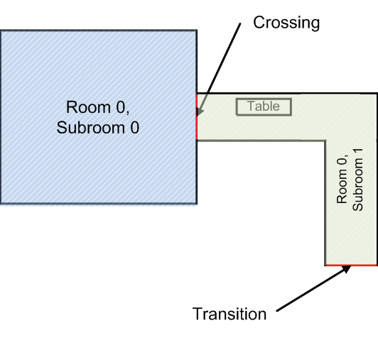

File formats
JuPedSim uses three two input files and produces an output file with trajectories

- Inifile: This is the project file that controls the simulation parameter, the population properties, etc.
- Geometry file: Defines the geometry that should be used in the simulation
- Output of the simulation is a trajectory file.
Geometry
The main structure of the geometry file is as follows

Sample geometry with one room, two subrooms and one obstacle. An obstacle should not overlap with any wall of the geometry. 
The main components of a geometry an: - Rooms - Subrooms - Obstacles - Crossings - Transitions
Rooms
The geometry contains at least one room and one transition.
Each room has a unique id and optional caption.
Two rooms are separated by either walls or transitions.
<rooms>
<room id="0" caption="hall" >
</rooms>
Subrooms
Subrooms define the navigation mesh, i.e the walkable areas in the geometry.
Each subroom is bounded by at least 1 crossing.
A sample is described in the following listing:
<subroom id="1" class="stair" A x="−1.2" B y="0" C="0">
<polygon caption="wall">
<vertex px="0.0" py="1.0"/>
<vertex px="−5.0" py="1.0"/>
</ polygon>
<polygon caption="wall">
<vertex px="0.0" py="3.0"/>
<vertex px="−5.0" py="3.0"/>
</ polygon>
<up px="−5.0" py="2"/>
<down px="0.0" py="2"/>
</subroom>
-
idmandatory parameter, also referred by crossings and transitions. -
classoptional parameter defining the type of the subroom. At the moment two classes are defined: floorstairstakes additionallyxml <up px="-5.0" py="2" /> <down px="0.0" py="2" />used in the visualisation, for marking the highest and the lowest point.-
optional parameter for the explicit plane equation of the subroom. It allows the construction of a 3D environment and should be used to describe stairs. The plane equation is given by: . For instance, if the stair goes through the following points: then the equation is given by: .
-
polygondescribes the walls as a sequence of vertexes.
To ease navigation, it is recommended to always use convex subrooms. In the case the subroom is not convex, additional navigation lines might be required or the floor field router should be used.
Transitions
A transition defines the connection between two rooms and is basically a door.
It can be close or open (section “traffic constraints” in the inifile).
An example transition between two rooms
<!-- exits between rooms or to outside (room with index = -1) -->
<transition id="1" caption="main exit" type="emergency"
room1_id="0" subroom1_id="1" room2_id="-1" subroom2_id="-1">
<vertex px="15.0" py="-5.0"/>
<vertex px="17.0" py="-5.0"/>
</transition>
id, mandatory unique identifier for thistransition. Theidis also used to close or open the door in the traffic constraints section of the inifile.caption, optional, used in the visualisation.type, optional. The parameter is not internally used.room1_id, the first room sharing this transition. The order is not important.subroom1_id, the firstsubroomlocated inroom_1.room2_id, the second room sharing this transition. The order is not important. If there is no second room (meaning this transition is connected to the outside), then use-1.subroom2_id, the secondsubroomsharing this transition. The order is not important. If there is no secondsubroom(meaning this transition is connected to the outside), then use-1.vertex: define two ending points of thetransition.
Crossings
A crossing defines the connection between two subrooms inside the same room.
Unlike transition, they are always open.
A sample crossing between two subrooms
<!-- virtual exits between subrooms -->
<crossing id="0" subroom1_id="0" subroom2_id="1">
<vertex px="10.0" py="6.0"/>
<vertex px="10.0" py="4.0"/>
</crossing>
id, mandatory unique identifier for thiscrossing.subroom1_id, the firstsubroomsubroom2_id, the secondsubroomsharing this transition. The order is not important. If there is no second subroom (meaning this transition is connected to the outside), then use-1.vertex, define two ending points of thecrossing`.
Obstacles
One or more obstacles can also be defined within a subroom.
Note: Obstacles should not any intersect with other geometry elements (walls, crossings or transitions).
Sample obstacle in a subroom
<obstacle id="0" caption="table" height="1.0" >
<polygon>
<vertex px="12.0" py="6.0"/>
<vertex px="13.0" py="6.0"/>
<vertex px="13.0" py="5.5"/>
<vertex px="12.0" py="5.5"/>
<vertex px="12.0" py="6.0"/>
</polygon>
</obstacle>
id, mandatory unique identifier for this obstacle.caption, used in the visualisation.height, optional parameter, not used at the momentpolygon, describing the obstacle as a sequence of vertex.
Inifile
todo
Trajectory
The results of the simulation are written to files or streamed to a network socket.
Possible formats are:
xml-plainwhich is the default xml formatplaina flat format (just numbers)
Note that if you are using the streaming mode, the format is forced to xml-plain.
The file has three main sections: header, geometry and frames.
<header version = "0.8">
<agents>1</agents>
<frameRate>8</frameRate>
</header>
where
agents: The total number of agents at the beginning of the simulation.- frameRate`: Divide the total number of frames by the framerate to obtain the overall evacuation time.
The geometry can be completely embedded within the trajectories or a reference to a file can be supplied.
<geometry>
<file location="corridor_geometry.xml"/>
</geometry>
The coordinates of the trajectory are defined in the session frames
<frame ID="0">
<agent ID="1" x="660.00" y="333.00" z="30.00"
rA="17.94" rB="24.94" eO="-168.61" eC="0"/>
</frame>
<frame ID="1">
<agent ID="1" x="658.20" y="332.86" z="30.00"
rA="31.29" rB="23.87" eO="-175.41" eC="54"/>
</frame>
IDthe id of the pedestrians starting with 1.-
x, y, zthe position of the agent. -
rA, rBThe shape which is defined by a circle (ellipse) drawn around a human-like figure.
radiusAandradiusBare respectively the semi major axis and the semi minor axis of the ellipse, if the modeled pedestrians’ shape is an ellipse. Otherwise, if it is a circle those values should be equal to the radius of the circle. eO, eCare the “ellipseOrientation” and the “ellipseColor”. “ellipseOrientation” is the angle between the major axis and the X-axis (zero for circle). A color can also be provided, for example for displaying change in velocity. The colours are in the range[0=red, 255=green]and define the proportion between the desired speed () and the instantaneous velocity.
A sample trajectory in the xml format is
<?xml version="1.0" encoding="UTF-8"?>
<trajectories>
<header version = "0.5">
<agents>1</agents>
<frameRate>8</frameRate>
</header>
<geometry>
<file location="corridor_geometry.xml"/>
</geometry>
<frame ID="0">
<agent ID="1" x="660.00" y="333.00" z="30.00"
rA="17.94" rB="24.94" eO="-168.61" eC="0"/>
</frame>
<frame ID="1">
<agent ID="1" x="658.20" y="332.86" z="30.00"
rA="31.29" rB="23.87" eO="-175.41" eC="54"/>
</frame>
</trajectories>
The other format of the trajectory file is plain-text
A sample trajectory in the plain format is as follows:
#description: simulation
#framerate: 16
#geometry: /home/sim/corridor.xml
#ID: the agent ID
#FR: the current frame
#X,Y,Z: the agents coordinates in metres
#ID FR X Y Z
1 0 28.21 131.57 0.00
2 0 38.41 133.42 0.00
1 1 28.21 131.57 0.00
2 1 38.41 133.42 0.00
1 2 28.24 131.57 0.00
2 2 38.44 133.42 0.00
1 3 28.29 131.57 0.00
2 3 38.49 133.42 0.00
1 4 28.36 131.57 0.00
2 4 38.56 133.42 0.00
1 5 28.44 131.57 0.00
2 5 38.64 133.42 0.00
1 6 28.54 131.57 0.00
2 6 38.74 133.42 0.00
1 7 28.65 131.57 0.00
2 7 38.85 133.42 0.00
1 8 28.77 131.57 0.00